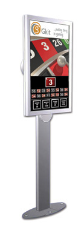
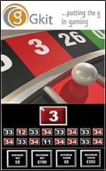
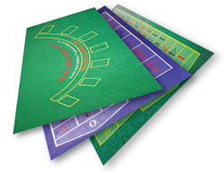
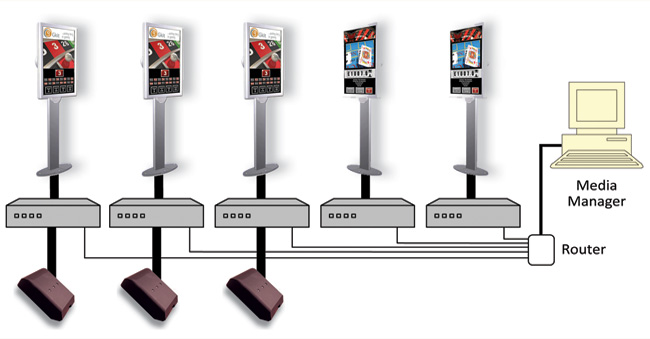
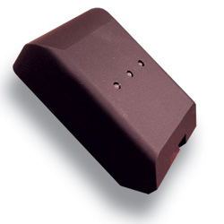

game displays
game displays
The display is a very versatile product, providing a wide range of media content in a stand-alone or networked format. Clear and dynamic graphics give an exciting feel to the display system, enhancing the gaming experience. Supplied with a 20inch screen with various standard templates available, the number of options are endless. In addition to the Roulette display there are a number of other games where displays can be used:
Blackjack
Poker
Baccarat
Brag
The package comprises of: 20" display & stand(s) / controller / standard software
The displays supply:
Min/max bet levels
Basic game rules
Media (look under Media Manager)
Progressive jackpots (from in venue jackpot system)
 Specification:
Specification:
Controller:
2Ghz processor
1GB RAM
PCI Card
40GB HDD
USB ports
RS232 ports
Ethernet
Parallel
Win XP Pro
Display:
Screen size 20 inches (viewable)
Screen type Thin film transistor (TFT) active-matrix liquid crystal display (AMLCD)
Resolution 1680 x 1050pixels (optimum resolution)
Display colours 16.7 million
Viewing angle 178 degrees horizontal; 178 degrees vertical
Brightness 300 cd/m2
Contrast ratio 700:1
Response time 14 ms
Pixel pitch 0.258 mm
Cables DVI (Digital Visual Interface), FireWire 400, USB 2.0 and DC power (24.5V)
Connectors Two-port, self-powered USB 2.0 hub, two FireWire 400 ports and Kensington security port
Other screen sizes available upon request.
Specification subject to change without notice
roulette display systems
Our winning number display is a very versatile product. Not only does it display winning numbers, but can also provide a wide range of media content in a stand-alone or networked format. Clear and dynamic graphics give an exciting feel to the display system, enhancing the gaming experience. Supplied with a 23inch screen with various standard templates available, the number of options are endless.
Systems can be supplied as a stand-alone product or networked to a media manager. As a stand-alone product, media content is stored within the controller and scheduled to the display. Live TV or video is managed through a controller. Changes to media is handled by updating the display controller. For multiple displays this would mean updating each controller manually. For centrally controlled systems see our Media Manager section.
The roulette display has multiple templates available depending upon the requirements.
Various areas are configurable depending upon customer requirements.
Roulette displays obtain the game status, ball position and winning number automatically from the Wheel Reader (for more details see our wheel reader section).
The package comprises of: 23" display(s) / stand / wheel reader / controller / standard software
The displays supply:
Winning number and previous 16 results
Min/max bet levels
Media (look under media manager)
Progressive Jackpots (using in venue progressive system)
Specification:
Controller:
2Ghz processor
1GB RAM
PCI Card
40GB HDD
USB ports
RS232 ports
Ethernet
Parallel
Win XP Pro
Display:
Screen size 23 inches (viewable)
Screen type Thin film transistor (TFT) active-matrix liquid crystal display (AMLCD)
Resolution 1920 x 1200pixels (optimum resolution)
Display colours 16.7 million
Viewing angle 170 degrees horizontal; 170 degrees vertical
Brightness 270 cd/m2
Contrast ratio 400:1
Response time 16 ms
Pixel pitch 0.258 mm
Cables DVI (Digital Visual Interface), FireWire 400, USB 2.0 and DC power (24.5V)
Connectors Two-port, self-powered USB 2.0 hub, two FireWire 400 ports and Kensington security port
Specification subject to change without notice
 table gaming layouts
We provide probably the best synthetic gaming layouts in the world. The ethos behind our Table Gaming Layouts is to provide high definition, high quality layouts with fast delivery at an affordable price. The layout design can be simple or as complex as you require. A wide range of designs are available due to the digital process we use.
Working closely with our customers, we ensure every detail is captured, and that the end result is exactly what you want. We only use high quality materials and inks, providing a stunning colour range and a product that has a quality feel and is durable even in the most demanding of environments. Table Gaming Layouts are manufactured in the UK, using an experienced team with the most up to date digital printing machines available . . . providing high quality in high volume.
Key features:
Standard or designed to your specification
High quality
Stunning depth of colour
Great quality feel
Long lasting performance
In-house design service
Quick delivery
Competitively priced
Colour swatch covering 10 standard colours. Other colours on request

media manager
The Media Manager centrally controls content displayed on each individual display, using a PC (either an existing PC in venue or supplied by us). The Manager can schedule content per display or globally across all displays. These can be timed events or displayed continuously. A wide variety off formats can be handled including:
AVI, WMV, Jpeg, Mpeg
Typical content control:
Advertising
Promotions
Separate plasma screens in lobby areas or bars
Ticker tape messaging
Live Sports events
Live Sports results
Progressive Jackpots (linked to an in venue system)
Progressive Jackpot winners (linked to an in venue system)
Video
TV
 roulette wheel reader
roulette wheel reader
The Roulette Wheel Reader is suitable to integrate Winning Number Displays or various Electronic Roulette devices or systems using a live or automated roulette wheel.
The Roulette Wheel Reader is a small device that fits onto the top of American Roulette wheels. The device doesn’t use any special form of mounting. The device is simply placed on the wheel with the overhang on the inner edge of the wheel. No fixings are required.
The device is auto calibrating. No mechanical or software adjustment is necessary. Once the device is on the rim of the wheel and the power supply connected, nothing else is required except to spin the wheel. During this phase the device searches for wheel numbers and determines whether it is a single or double zero wheel. Once this is complete (set up confirmed using the status LED’s) the wheel can be used in the normal way by spinning a ball in the rim. The device is fully automatic covering:
The wheel reader has been supplied to electronic roulette OEM's and is operational worldwide. Sold as a seperate device to display systems.
Ball phases:
Ball in rim (spinning)
No More Bets (ball decelerated)
Winning Numbers (2 revolutions of wheel)
Supervision includes:
A check that the ball is spinning in opposite direction to wheel rotation
Led alarm to show wheel spinning below 10RPM
Led alarm if ball removed during the spinning phase
Led alarm if ball placed in a pocket before No More Bets phase
Technical specification:
Integral power supply
3 Led’s for status and diagnostics
Automatic calibration — no moving or adjustable parts
Single software covering both Single or Double zero wheel
RS232 output covering Cammegh Mercury and TCS/John Huxley reader protocols. Other protocols available upon request.
A power supply is supplied with a plug suitable for the country of use.